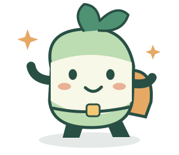

HABLA · EXPLORADORES DE PALABRAS
Tu próxima aventura empieza acáUn mundo por decir.
A tu manera.
Escuchá, armá y dibujá palabras. Elegí por dónde empezar: cada intento cuenta.
Son estilos de presentación. Elegí el más cómodo para vos.

Las palabras crecen con vos.Podés hacer una, varias o parar cuando quieras.
Hola, soy Luma. Te acompaño. No hace falta hacerlo perfecto para disfrutar el camino.
ESCUCHAR · DECIR · ESCRIBIR
Las palabras abren mundos.
Exploremos una palabra a la vez. ¿Con cuál empezamos hoy?
Tu práctica de esta sesión
0 actividades registradasperro
pe · rro
Un compañero de cuatro patas.
EXPLORAR Y ELEGIR
Un mundo de palabras.
Banco ortográfico abierto, sin definiciones del DLE. Incluye formas regionales; su cobertura no es exhaustiva.
El banco completo contiene términos de todo tipo. Para practicar con niños, usá la selección para practicar o una lista revisada por un adulto.
Tus propias palabras
Agregá nombres o palabras indicadas en la sesión. No se envían a ningún servidor.
TRAZOS CON CALMA
Tu cuaderno, tu ritmo.
Seguí el modelo con el dedo, un lápiz táctil o el mouse. También podés escribir con el teclado.
Modelo visual libre: no enseña el orden de los trazos ni evalúa la motricidad. La cursiva varía según el sistema. Para aprender el movimiento de cada letra, seguí la demostración de tu profesional o docente.
PASO A PASO
Todo lo que vas explorando.
Registro de actividades, sin puntajes clínicos. Se guarda únicamente en este navegador: hasta 1.000 actividades, sin sincronización entre dispositivos.
Últimas 30 actividades
Se combinará con lo guardado, sin duplicar actividades. Antes se descargará una copia del registro anterior. Conservá esa descarga.
¿Borrar el registro de actividades de este navegador? Las palabras agregadas y favoritas se conservan.
PARA FAMILIAS Y PROFESIONALES
Un apoyo para acompañar.
Antes de empezar
Habla es una herramienta educativa de apoyo. No diagnostica ni reemplaza la evaluación o el tratamiento fonoaudiológico. Elegí objetivos y palabras con tu profesional; adaptá la duración a la comodidad de quien practica.
- Escuchá: reproducí una palabra o pedí a una persona que la modele.
- Probá: repetí sin forzar. Si resulta cómodo, usala en una frase.
- Escribí: copiá primero; después podés ocultar el modelo o escuchar un dictado.
- Trazá: seguí el modelo y luego probá una letra o palabra en papel.
Los contrastes de pares como pero/perro ayudan a explorar diferencias de sonido y significado. La selección terapéutica corresponde al profesional. El seseo, el yeísmo y las variantes regionales argentinas no se consideran errores en esta aplicación.
No incluimos ejercicios de soplo, fuerza lingual ni diagnósticos automáticos. Las grabaciones sirven para escucharse, no para determinar si un sonido es correcto.
Voz y privacidad
El micrófono se solicita solo al pulsar Grabar. El audio permanece en memoria y se descarta al cambiar de palabra, actividad o sección, o al cerrar la página, salvo que lo descargues. La app no tiene cuentas, anuncios ni analítica propia, y no sube tus prácticas. Al abrir la versión publicada, GitHub Pages recibe las solicitudes de archivos y registra la dirección IP por seguridad.
La grabación requiere localhost o HTTPS. Desde otro equipo por HTTP de red local puede no estar disponible. La escritura, el banco y el cuaderno funcionan sin micrófono.
Los trazos no se guardan automáticamente al cerrar la página o cambiar el modelo. Descargá el dibujo si querés conservarlo.
Fuentes y alcance
El banco léxico sirve para buscar grafías, no constituye un diccionario de definiciones ni contiene todas las flexiones posibles. La selección cotidiana y sus explicaciones son de elaboración propia.
- RLA-ES: recursos lingüísticos abiertos · Licencia del corpus
- ASHA: sonidos del habla y enfoques de intervención
- IES: enseñanza de escritura y caligrafía
- Consultar el DLE en línea · Academia Argentina de Letras
El registro JSON se puede descargar para consulta, pero la app todavía no permite restaurarlo. Los dibujos y audios se descargan por separado.
Los enlaces externos requieren Internet. No copiamos definiciones de la RAE ni de la Academia Argentina.
Escuchaste, probaste y descubriste. Podés descansar o seguir a tu ritmo.